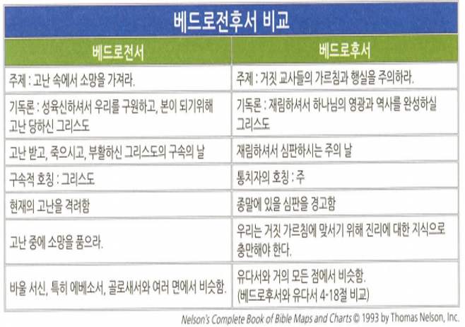

<!doctype html>
<html>
    <head>
        <meta charset="UTF-8">
        <meta name = "viewport" content = "width = device-width, initial-scale=1.0">
        <title>CF1 베드로전후서</title>
        <link rel="stylesheet" type="text/css" href="../../../css/pages.css">
    </head>
</html>

<body>
    <header>
        <h3><a href = "../../../index.html">HAGUS <br> HARDWARE</a></h3> 
        <ul id="main_menu">
        </ul>

        <script src = "../../../MainMenu.js"></script>
    </header>

    <section class="section">
    <div id = "tag_menu">
    </div>

    <script src = "../../../TIL_tag_menu.js"></script>

    <div id = "tag_list">
        <div class="l_title"><a href = "../../../TIL.html">Class.</a></div><hr>
        <div class = "l_subtitle"><div class = "title"><a href = "../../../TIL.html"><strong>[CF1] 베드로전후서 </div><div id="date">2021.06.13</div></strong></a></div>
             <!--====content====-->
        <div class = "content"> 
<pre>
도미티아누스 황제 때 기록
박해/소망/종말론적 신앙

<span class = "h">핵심적인 사실</span>
<strong>저자</strong> : 시몬 베드로
<strong>연대</strong> : 62,63,65년 무렵
<strong>장소</strong> : 로마
<strong>수신</strong> : 소아시아 북쪽의 그리스도인들
<strong>상황</strong> : 교회의 핍박과 거짓 가르침에 대하여
<strong>목적</strong> : 그리스도인을 격려, 거짓 가르침을 거부
<strong>주제</strong> : 적대적인 세상에 있는 그리스도인들 격려, 거짓 교사들의 위험성 경고
<strong>핵심 요절</strong> 
(벧전 3:15-16) 너희 마음에 그리스도를 주로 삼아 거룩하게 하고 너희 속에 있는 소망에 관한 이유를 묻는 자에게는 대답할 것을 항상 준비하되 온유와 두려움으로 하고, 선한 양심을 가지라 이는 그리스도 안에 있는 너희의 선행을 욕하는 자들로 그 비방하는 일에 부끄러움을 당하게 하려 함이라

(벧후 3:17-18) 그러므로 사랑하는 자들아 너희가 이것을 미리 알았은즉 무법한 자들의 미혹에 이끌려 너희가 굳센 데서 떨어질까 삼가라. 오직 우리 주 곧 구주 예수 그리스도의 은혜와 그를 아는 지식에서 자라 가라 영광이 이제와 영원한 날까지 그에게 있을지어다





<span class = "h">기독교인 미덕의 단계</span>
덕
덕에 지식을
지식에 절제를
절제에 인내를
인내에 경건을
경건에 형제우애를
형제우애에 사랑을 채우라 (1:5-7)


<span class = "h">거짓 교사들에 대한 비난</span>
1. 거짓 교사들의 위험과 본질
2. 과거의 하나님의 심판
3. 거짓 교사들의 불경건성
4. 거짓교사들에 대한 설명


</pre>  
    <br>
    <br>
    <br>
    </div> 

    </div>

</section>

    
</body>


